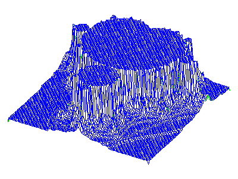

- not so Frequently Asked Questions -
update 2004/11/29
|
|
- not so Frequently Asked Questions - update 2004/11/29
|
FractalWe generate a simple fractal image with gnuplot. To calculate fractal graphics, functions must be defined in a recursive form. At first we explain how to define the recursive functions with gnuplot, then the Mandelbrot set and self-squared fractal images are shown. |